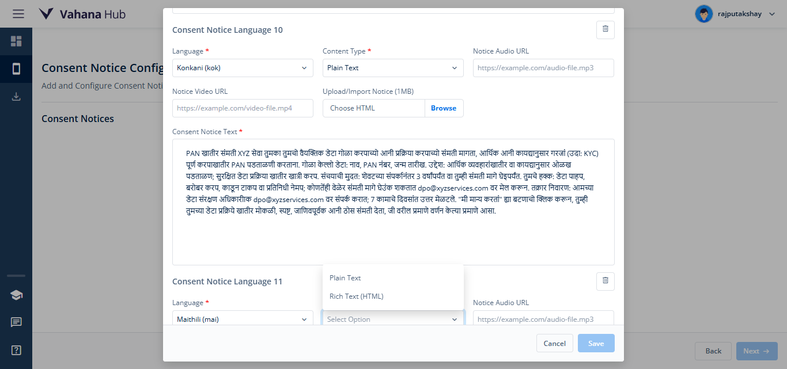

-
Verify user logout functionality from vHub and vBank
4:42:32 pm / 00:00:13:225 Pass
Verify user logout functionality from vHub and vBank
07.19.2025 4:42:32 pm 07.19.2025 4:42:45 pm 00:00:13:225 · #test-id=1PassUser successfully logs out from vHubGiven the user is logged in and on the vHub Home pageWhen the user logs out from vHub using the header menuThen the user should be redirected to the vHub login pagePassUser successfully logs out from vBankGiven the user is logged in and search vConsentWhen the user navigates to the Asset Details page and accesses the vBank Landing PageAnd the user logs out from vBank using the header menuThen the user should be redirected back to the Asset Details page -
Verify navigate to vBank Landing Page successfully.
4:42:45 pm / 00:00:09:784 Pass
Verify navigate to vBank Landing Page successfully.
07.19.2025 4:42:45 pm 07.19.2025 4:42:55 pm 00:00:09:784 · #test-id=20PassVeirfy Successfully navigate to vBank Landing Page after loginGiven the user has successfully logged in and is on the vHub home pageWhen the user navigates to the Asset Details pageThen the user should be redirected to the vBank Landing Page -
Verify Publish app to Sandbox successfully.
4:42:55 pm / 00:00:50:821 Fail
Verify Publish app to Sandbox successfully.
07.19.2025 4:42:55 pm 07.19.2025 4:43:46 pm 00:00:50:821 · #test-id=29PassVerify Fill all required fields and publish the app to Sandbox.Given User Land on vbank Landing pageAnd Fill all the required field of App setting pageWhen Fill all required field of Consent configuration pageEnterprise No Code Composable No Code Platform for Digital Banking Digital Insurance Industry Workflow Customer https://www.learningcontainer.com/wp-content/uploads/2020/02/Kalimba.mp3 http://commondatastorage.googleapis.com/gtv-videos-bucket/sample/BigBuckBunny.mp4 Consent Configuration data details Then Fill all the required field on Publish App page.First Release vBank app FailVerify publishing a sandbox app with all consent languages using Rich HTML textGiven the user is on the vBank landing pageWhen the user selects all languages on the App Settings pageThen the user fills in all required fields on the Consent Configuration page with consent notice text in each selected language using Rich HTMLSection Content Purpose Enterprise No Code Composable No Code Platform for Digital Banking Digital Insurance Industry Workflow Customer Audio https://www.learningcontainer.com/wp-content/uploads/2020/02/Kalimba.mp3 Video http://commondatastorage.googleapis.com/gtv-videos-bucket/sample/BigBuckBunny.mp4 English English Consent for PAN Verification: XYZ Services seeks your consent to collect and process your personal data for PAN verification to meet financial and regulatory requirements (e.g., KYC). Data Collected: Name, PAN Number, Date of Birth. Purpose: Verify identity for financial transactions or compliance; ensure secure data processing. Storage Duration: Up to 3 years from last interaction or until you withdraw consent. Your Rights: Access, correct, erase, or nominate data; withdraw consent anytime at dpo@xyzservices.com. Grievance Redressal: Contact our Data Protection Officer at dpo@xyzservices.com; response within 7 working days. By clicking “I Agree,” you provide free, specific, informed, and unambiguous consent for data processing as described. Assamese Assamese PAN সত্যাপনৰ বাবে সম্মতি XYZ Services বিত্তীয় আৰু নিয়ন্ত্ৰণমূলক প্ৰয়োজনীয়তা (যেনে, KYC)ৰ বাবে PAN সত্যাপনৰ কাৰণে আপোনাৰ ব্যক্তিগত তথ্য সংগ্ৰহ আৰু প্ৰক্ৰিয়াকৰণৰ বাবে সম্মতি বিচাৰে। সংগৃহীত তথ্য: নাম, PAN নম্বৰ, জন্ম তাৰিখ উদ্দেশ্য: বিত্তীয় লেনদেন বা পালনৰ বাবে পৰিচয় সত্যাপন; সুৰক্ষিত তথ্য প্ৰক্ৰিয়াকৰণ। সংৰক্ষণৰ সময়: শেষৰ যোগাযোগৰ পৰা ৩ বছৰলৈ বা সম্মতি প্ৰত্যাহাৰলৈ। আপোনাৰ অধিকাৰ: তথ্যত প্ৰৱেশ, সংশোধন, মচি পেলোৱা, নিযুক্তি; যিকোনো সময়ত dpo@xyzservices.com ত সম্মতি প্ৰত্যাহাৰ কৰক। অভিযোগ নিষ্পত্তি: ডেটা সুৰক্ষা বিষয়াৰ সৈতে dpo@xyzservices.com ত যোগাযোগ কৰক; ৭ কৰ্মদিবসৰ ভিতৰত উত্তৰ। “মই সন্মত”ত ক্লিক কৰি, আপুনি তথ্য প্ৰক্ৰিয়াকৰণৰ বাবে মুক্ত, নিৰ্দিষ্ট, সূচিত আৰু স্পষ্ট সম্মতি প্ৰদান কৰে। Bengali PAN যাচাইয়ের জন্য সম্মতি XYZ Services আর্থিক এবং নিয়ন্ত্রণমূলক প্রয়োজনীয়তা (যেমন, KYC) মেনে চলার জন্য PAN যাচাইয়ের জন্য আপনার ব্যক্তিগত তথ্য সংগ্রহ এবং প্রক্রিয়াকরণের জন্য সম্মতি চায়। সংগৃহীত তথ্য: নাম, PAN নম্বর, জন্ম তারিখ উদ্দেশ্য: আর্থিক লেনদেন বা সম্মতির জন্য পরিচয় যাচাই; নিরাপদ তথ্য প্রক্রিয়াকরণ। সংরক্ষণের সময়: শেষ যোগাযোগ থেকে ৩ বছর পর্যন্ত বা সম্মতি প্রত্যাহার পর্যন্ত। আপনার অধিকার: তথ্যে প্রবেশ, সংশোধন, মুছে ফেলা, মনোনয়ন; যে কোনও সময় dpo@xyzservices.com-এ সম্মতি প্রত্যাহার করুন। অভিযোগ নিষ্পত্তি: ডেটা সুরক্ষা অফিসারের সাথে dpo@xyzservices.com-এ যোগাযোগ করুন; ৭ কার্যদিবসের মধ্যে উত্তর। “আমি সম্মত” ক্লিক করে, আপনি তথ্য প্রক্রিয়াকরণের জন্য মুক্ত, নির্দিষ্ট, সুপরিচিত এবং স্পষ্ট সম্মতি প্রদান করেন Bodo PAN जाँचाब फोरमाय मोजेन खौथुननाय XYZ Services बा नोंथों फोरमाय मोजेन फालाव फोरथिं PAN जाँचाब फोरमाय नोंथोंनि गोसोब दिन्थिनाय आरो रेजुलेटोरि सोंजोगोन सायबाय (जैना KYC) नि फोरमाय। फालाव होनाय डाटा: मुं, PAN हाबा, जन्मनि दिन उद्देश्यो: फाइनेंशियल ट्रांजेक्शन आरो काइदो जोगानिबाय उन्थि जाआ, गोसोब डाटा प्रोसेसिंगनि निखिथो होनाय। सांजारि समाय: गोबांनाय मुइनाय 3 बछोर jabna आरो थांगोबाखौ मोजेन खौथुननाय समार। नोंथोंनि हांथिहों: डाटा access, correct, erase, आरो nominate खालामनाय; मोजेन खौथुननाय jabna dpo@xyzservices.com नाय सोलायब। ग्रिभियांस रिड्रेसाल: डाटा प्रोटेक्शन अफिसर dpo@xyzservices.com नाय सोलायब; 7 working दिननि मोनजों जाबाय response दिननाय। "I Agree" बाइ क्लिक खालामनो: नोंथों बिफाव, specification, जानकारी आरो साफ-सपाट मोजेन खौथुननाय data processing फोरमाय दिननाय। Dogri PAN सत्यापन लई सहमति XYZ Services तुहाड़ी सहमति मंगदी ऐ तां जो तुहाड़े निजी डाटा नूं PAN सत्यापन लई इकट्ठा ते प्रोसेस कर सके, जेसे नाल वित्तीय ते रेगुलेटरी जरूरतां (जिवें KYC) पूरी कित्तियां जा सकण। इकट्ठा किए गए डाटा: नां, PAN नंबर, जनम तिथि उद्देश्य: वित्तीय लेनदेन या नियम-पालना लई पहचान दी पुष्टि करना; सुरक्षित डाटा प्रोसेसिंग नूं यकीनी बनाना। भंडारण अवधी: आखिरी इंटरैक्शन तों 3 साल तक या तुहाड़ी सहमति वापसी तक। तुहाडे अधिकार: डाटा नूं देखण, ठीक करणा, मिट्ठा देणा या नामित करणा; तुसीं कदे वी dpo@xyzservices.com ते संपर्क करके सहमति वापिस ले सकदे हो। शिकायत निवारण: साडे डाटा प्रोटेक्शन अफसर नूं dpo@xyzservices.com ते संपर्क करो; 7 कार्यदिवसां अंदर जवाब दित्ता जावेगा। "I Agree" क्लिक करके, तुसीं अपनी स्पष्ट, जानकारीपूर्ण ते बिना दबाव वाली सहमति डाटा प्रोसेसिंग लई दे रहे हो जिवें ऊपर वर्णित किता गया ऐ। Gujrati "XYZ Services" નાણાકીય અને નિયમનકારી આવશ્યકતાઓ (જેમ કે, KYC) માટે PAN ચકાસણી માટે તમારું વ્યક્તિગત ડેટા એકત્રિત અને પ્રક્રિયા કરવાની સંમતિ માંગે છે। એકત્રિત ડેટા: નામ, PAN નંબર, જન્મ તારીખ ઉદ્દેશ્ય: નાણાકીય લેવડદેવડ અથવા પાલન માટે ઓળખ ચકાસણી; સુરક્ષિત ડેટા પ્રક્રિયા। સંગ્રહ અવધિ: છેલ્લી સંપર્ક તારીખથી ૩ વર્ષ સુધી અથવા સંમતિ પાછી ખેંચાય ત્યાં સુધી। તમારા અધિકારો: ડેટામાં પ્રવેશ, સુધારો, કાઢી નાખવો, નામંજૂરી આપવી; કોઈપણ સમયે dpo@xyzservices.com પર સંમતિ પાછી ખેંચી શકાય છે। ફરિયાદ નિવારણ: ડેટા સંરક્ષણ અધિકારીનો dpo@xyzservices.com પર સંપર્ક કરો; ૭ કાર્યદિવસોમાં જવાબ આપવામાં આવશે। "હું સંમત છું" પર ક્લિક કરીને, તમે ડેટા પ્રક્રિયા માટે મુક્ત, વિશિષ્ટ, માહિતિયુક્ત અને સ્પષ્ટ સંમતિ આપો છો। Hindi XYZ Services वित्तीय और नियामक आवश्यकताओं (जैसे, KYC) के लिए PAN सत्यापन हेतु आपका व्यक्तिगत डेटा एकत्र करने और संसाधित करने की सहमति मांगता है। एकत्रित डेटा: नाम, PAN नंबर, जन्म तिथि उद्देश्य: वित्तीय लेनदेन या अनुपालन के लिए पहचान सत्यापन; सुरक्षित डेटा संसाधन। भंडारण अवधि: अंतिम संपर्क से 3 वर्ष तक या सहमति वापसी तक। आपके अधिकार: डेटा तक पहुँच, सुधार, मिटाना, नामांकन; किसी भी समय dpo@xyzservices.com पर सहमति वापस लें। शिकायत निवारण: डेटा संरक्षण अधिकारी से dpo@xyzservices.com पर संपर्क करें; 7 कार्य दिवसों में जवाब। “मैं सहमत हूँ” पर क्लिक करके, आप डेटा संसाधन के लिए स्वतंत्र, विशिष्ट, सूचित और स्पष्ट सहमति देते हैं। Kannada ಪ್ಯಾನ್ ಪರಿಶೀಲನೆಗೆ ಅನುಮತಿ XYZ ಸೇವೆಗಳು ಹಣಕಾಸು ಮತ್ತು ನಿಯಂತ್ರಣ ಅಗತ್ಯತೆಗಳನ್ನು (ಉದಾ: KYC) ಪೂರೈಸಲು ನಿಮ್ಮ ವೈಯಕ್ತಿಕ ಡೇಟಾವನ್ನು ಸಂಗ್ರಹಿಸಲು ಮತ್ತು ಪ್ರಕ್ರಿಯೆಗೊಳಿಸಲು ನಿಮ್ಮ ಅನುಮತಿಯನ್ನು ಹುಡುಕುತ್ತಿದೆ. ಸಂಗ್ರಹಿಸಲಾದ ಡೇಟಾ: ಹೆಸರು, ಪ್ಯಾನ್ ಸಂಖ್ಯೆ, ಜನ್ಮದಿನಾಂಕ ಉದ್ದೇಶ: ಹಣಕಾಸು ವ್ಯವಹಾರಗಳು ಅಥವಾ ಅನುಕೂಲತೆಗಾಗಿ ಗುರುತನ್ನು ಪರಿಶೀಲಿಸುವುದು; ಸುರಕ್ಷಿತ ಡೇಟಾ ಪ್ರಕ್ರಿಯೆಯನ್ನು ಖಚಿತಪಡಿಸಿಕೊಳ್ಳುವುದು. ಸಂಗ್ರಹ ಅವಧಿ: ಕೊನೆಯ ಸಂವಹನದಿಂದ 3 ವರ್ಷಗಳವರೆಗೆ ಅಥವಾ ನೀವು ಅನುಮತಿಯನ್ನು ಹಿಂತೆಗೆದುಕೊಳ್ಳುವವರೆಗೆ. ನಿಮ್ಮ ಹಕ್ಕುಗಳು: ಡೇಟಾವನ್ನು ಪ್ರವೇಶಿಸಲು, ಸರಿಪಡಿಸಲು, ಅಳಿಸಲು ಅಥವಾ ಪ್ರತಿನಿಧಿಯನ್ನು ನಾಮಕರಣ ಮಾಡಲು, ಯಾವುದೇ ಸಮಯದಲ್ಲಾದರೂ dpo@xyzservices.com ಗೆ ಇಮೇಲ್ ಮಾಡುವ ಮೂಲಕ ಅನುಮತಿಯನ್ನು ಹಿಂತೆಗೆದುಕೊಳ್ಳಬಹುದು. ದೂರು ಪರಿಹಾರ: ನಮ್ಮ ಡೇಟಾ ಸಂರಕ್ಷಣಾ ಅಧಿಕಾರಿ dpo@xyzservices.com ಸಂಪರ್ಕಿಸಿ; 7 ಕೆಲಸದ ದಿನಗಳಲ್ಲಿ ಪ್ರತಿಕ್ರಿಯೆ ನೀಡಲಾಗುತ್ತದೆ. "ನಾನು ಒಪ್ಪುತ್ತೇನೆ" ಕ್ಲಿಕ್ ಮಾಡುವ ಮೂಲಕ ನೀವು ಮೇಲ್ಕಂಡ ವಿವರಿಸಿದ ರೀತಿಯಲ್ಲಿ ಡೇಟಾ ಪ್ರಕ್ರಿಯೆಗೆ ಮುಕ್ತ, ನಿರ್ದಿಷ್ಟ, ಮಾಹಿತಿ ಆಧಾರಿತ ಮತ್ತು ಸ್ಪಷ್ಟವಾದ ಅನುಮತಿಯನ್ನು ನೀಡುತ್ತೀರಿ. Kashmiri پین تصدیقۍ خاطر رضا مندی XYZ سروسز تُهندۍ ذاتۍ معلومات حاصل کرنہ آسن تہ پروسَس کرنہ آسن تُندۍ رضا مندی چھ ماننۍ، پین (PAN) تصدیق خاطر مالیاتی تہ ضابطاواری تقاضہ پورہ کرنہ آسن (مثال: KYC)۔ حاصل کرنہ آسن معلومات: ناو، پین نمبر، تاریخِ پیدائش۔ مقصد: مالیاتی لین دین یا قانون مطابقی خاطر شناخت تصدیق کرنہ؛ محفوظ ڈیٹا پروسَسنگ یقینی بناونہ۔ ذخیرہ مدت: آخری رابطہ ہند 3 برس تک یا جب تک تُہندۍ رضا مندی واپس نا لیہِ ونتھ۔ تُهندۍ حقوق: معلومات تک رسائی، تصحیح، مٹاون یا نماندہ مقرر کرنہ؛ تُهندۍ رضا مندی کسے ویلے واپس لیہِ ونتھ از طریقہ dpo@xyzservices.com۔ شکایت نپٹارہ: اسۍ ڈاٹا تحفظ افسر دپتونہ dpo@xyzservices.com پتے پر رابطہ گژھان؛ 7 کاری دنن منژ جواب دِیوان چھ۔ "میں رضا مند آساں" پر کلک کرنہ سیتھ، تُهندۍ طرفہ آزاده، مخصوص، جانکاری حاصل کرنہ والی، تہ بے شک شکلی رضا مندی دِیوان چھ تُهندۍ معلومات پروسَسنگ خاطر، ژیہ چھ بیان کرنہ گئ۔ Konkani PAN खातीर संमती XYZ सेवा तुमका तुमचो वैयक्तिक डेटा गोळा करपाच्यो आनी प्रक्रिया करपाच्यो संमती मागता, आर्थिक आनी कायद्यानुसार गरजां (उदा: KYC) पूर्ण करपाखातीर PAN पडताळणी करताना. गोळा केल्लो डेटा: नाव, PAN नंबर, जन्म तारीख. उद्देश: आर्थिक व्यवहारांखातीर वा कायद्यानुसार ओळख पडताळण; सुरक्षित डेटा प्रक्रिया खातीर खात्री करप. संचयाची मुदत: शेवटच्या संपर्कानंतर 3 वर्षांपर्यंत वा तुम्ही संमती मागे घेइपर्यंत. तुमचे हक्क: डेटा पाहप, बरोबर करप, काडून टाकप वा प्रतिनिधी नेमप; कोणतेंही वेळेर संमती मागे घेउंक शकतात dpo@xyzservices.com वर मेल करून. तक्रार निवारण: आमच्या डेटा संरक्षण अधिकारीाक dpo@xyzservices.com वर संपर्क करात; 7 कामाचे दिवसांत उत्तर मेळटले. "मी मान्य करतां" ह्या बटणाचो क्लिक करून, तुम्ही तुमच्या डेटा प्रक्रिये खातीर मोकळी, स्पष्ट, जाणिवपूर्वक आनी ठोस संमती देता, जी वरील प्रमाणे वर्णन केल्या प्रमाणे आसा. Maithili PAN सत्यापन लेल सहमति XYZ सेवासभ अहाँ सँ अहाँक व्यक्तिगत डेटा संग्रह आ प्रोसेस करबाक लेल सहमति मँगि रहल अछि, ताकि वित्तीय आ नियामकीय आवश्यकतासभ (जइमे KYC शामिल अछि) पूरा कएल जा सकए। संग्रह कएल जाए वाला डेटा: नाम, PAN नंबर, जन्म तिथि। उद्देश्य: वित्तीय लेन-देन या अनुपालन लेल पहचान के सत्यापन करब; डेटा के सुरक्षित प्रोसेसिंग सुनिश्चित करब। संचयन अवधि: अंतिम संपर्क सँ 3 वर्ष धरि या जब धरि अहाँ अपन सहमति वापस नहि लैत छी। अहाँक अधिकार: डेटा देखबाक, सुधार करबाक, हटेबाक, अथवा प्रतिनिधि नामित करबाक; सहमति कखनहुँ वापस ल सकैत छी dpo@xyzservices.com पर संपर्क कए। शिकायत निवारण: हमर डेटा संरक्षण अधिकारी सँ dpo@xyzservices.com पर संपर्क करू; 7 कार्यदिवस केर भीतर उत्तर देल जाएत। “हम सहमत छी” पर क्लिक कए, अहाँ स्वतंत्र, विशिष्ट, जानकारीपूर्ण आ स्पष्ट रूप सँ वर्णित डेटा प्रोसेसिंग लेल अपन सहमति प्रदान करैत छी। Malayalam പാൻ സ്ഥിരീകരണത്തിന് സമ്മതം XYZ സർവീസസ് സാമ്പത്തികവും നിയമപരവുമായ ആവശ്യങ്ങൾ (ഉദാ: KYC) നിറവേറ്റുന്നതിനായി നിങ്ങളുടെ വ്യക്തിഗത ഡാറ്റ ശേഖരിക്കുകയും പ്രോസസ് ചെയ്യുകയും ചെയ്യുന്നതിനുള്ള നിങ്ങളുടെ സമ്മതം തേടുന്നു. ശേഖരിക്കുന്ന ഡാറ്റ: പേര്, പാൻ നമ്പർ, ജനനത്തിയ്യതി. ഉദ്ദേശ്യം: സാമ്പത്തിക ഇടപാടുകൾക്കും നിയമാനുസൃതതയ്ക്കും വേണ്ടിയുള്ള തിരിച്ചറിയൽ സ്ഥിരീകരണം; സുരക്ഷിതമായ ഡാറ്റ പ്രോസസ്സിംഗ് ഉറപ്പാക്കൽ. സംഭരണകാലാവധി: അവസാന ഇടപഴകലിൽ നിന്ന് 3 വർഷം വരെ അല്ലെങ്കിൽ നിങ്ങൾ സമ്മതം പിൻവലിക്കുന്നതുവരെ. നിങ്ങളുടെ അവകാശങ്ങൾ: ഡാറ്റ ആക്സസ് ചെയ്യൽ, തിരുത്തൽ, മായിക്കൽ, പ്രതിനിധിയെ നാമനിർദ്ദേശം ചെയ്യൽ; നിങ്ങളുടെ സമ്മതം ഏതു സമയത്തും dpo@xyzservices.com എന്ന വിലാസത്തിൽ ഇമെയിൽ അയച്ച് പിൻവലിക്കാം. പരാതി പരിഹാരത്തിനായി: ഞങ്ങളുടെ ഡാറ്റാ സംരക്ഷണ ഓഫീസറെ dpo@xyzservices.com എന്ന വിലാസത്തിൽ ബന്ധപ്പെടുക; 7 പ്രവൃത്തി ദിവസങ്ങൾക്കുള്ളിൽ പ്രതികരിക്കും. “ഞാൻ സമ്മതിക്കുന്നു” എന്നതിൽ ക്ലിക്കുചെയ്യുന്നതിലൂടെ, മുകളിൽ വിവരിച്ചിരിക്കുന്നതുപോലെ ഡാറ്റ പ്രോസസ്സിംഗിനായി നിങ്ങൾ സ്വതന്ത്രവും വ്യക്തമായും അറിയിച്ചും വ്യക്തമായും സമ്മതം നൽകുന്നു। Manipuri PAN Verification-gi matungda Consent (Saham) piba XYZ Services-na nungsiba amasung mamangda thokpa financial amasung regulatory thoudang-sing (masi KYC houba phangba amasung phangdokpa) tinnaba nupasingda personal data collection amasung processing touriba matungda nungsiba saham piba phangduna. Collection touriba data-sing: Maming, PAN number, Numit thokpa (Date of Birth). Thourang (Purpose): Financial transaction-sing amasung law-follow tinnaba identity verify touriba; data asi phangba amasung secure oiraba phangdokpa. Storage duration: Madugi matungda last interaction-dagi 3 year kanglaba, nattra sahamsing withdraw touriba phaoba matamda. Nahakki hakchang (Rights): Data asi access touriba, correct touriba, erase touriba, nattra nominee henna thabak piba; sahamsing khandokpa c houbirakle dpo@xyzservices.com-da thijinnaba yamna oigani. Grievance redressal: Nahakki complaint sing dpo@xyzservices.com-da Data Protection Officer-ta thijinnabasingni; 7 working day-gi matungda reply phangjari. “I Agree” haiba button asi click touraba matungda, nahakna matik chaba, thourammi, amasung ngaiduna pumnamak leitraba sahamsing data processing-gi matungda pibani haiba pukning thoklak-i. Marathi PAN पडताळणीसाठी संमती XYZ सेवा आर्थिक आणि नियामक गरजा (उदा: KYC) पूर्ण करण्यासाठी तुमचा वैयक्तिक डेटा गोळा करण्यासाठी आणि प्रक्रिया करण्यासाठी तुमची संमती मागत आहे. संकलित डेटा: नाव, PAN क्रमांक, जन्मतारीख. उद्देश: आर्थिक व्यवहार किंवा कायदेशीर अनुपालनासाठी ओळख पडताळणी; सुरक्षित डेटा प्रक्रिया सुनिश्चित करणे. साठवण कालावधी: शेवटच्या संवादापासून 3 वर्षांपर्यंत किंवा तुम्ही संमती मागे घेईपर्यंत. तुमचे हक्क: डेटा पाहण्याचा, दुरुस्त करण्याचा, हटवण्याचा किंवा प्रतिनिधी नियुक्त करण्याचा हक्क; तुम्ही कधीही संमती मागे घेऊ शकता dpo@xyzservices.com वर संपर्क करून. तक्रार निवारण: आमच्या डेटा संरक्षण अधिकाऱ्याशी dpo@xyzservices.com वर संपर्क साधा; 7 कार्यदिवसांच्या आत उत्तर दिले जाईल. “मी संमती देतो/देते” या बटणावर क्लिक करून, तुम्ही वरीलप्रमाणे वर्णन केलेल्या पद्धतीने डेटा प्रक्रियेसाठी स्वेच्छेने, स्पष्टपणे आणि माहितीपूर्ण संमती देता. Nepali PAN प्रमाणीकरणको लागि सहमति XYZ सेवाहरू तपाईंको व्यक्तिगत डेटा सङ्कलन गर्न र प्रक्रिया गर्न तपाईंको सहमति माग्दैछ, जसले वित्तीय र नियामक आवश्यकताहरू (उदाहरण: KYC) पूरा गर्न सहयोग पुर्याउँछ। सङ्कलन गरिने डेटा: नाम, PAN नम्बर, जन्म मिति। उद्देश्य: वित्तीय कारोबार वा कानुनी पालना गर्न पहिचान प्रमाणित गर्नु; डेटा सुरक्षित रूपमा प्रक्रिया भएको सुनिश्चित गर्नु। डेटा संरक्षण अवधि: अन्तिम अन्तरक्रियाबाट 3 वर्षसम्म वा तपाईंले सहमति फिर्ता लिनेबेला सम्म। तपाईंका अधिकारहरू: डेटा हेर्न, सच्याउन, मेटाउन वा प्रतिनिधि तोक्न सक्नुहुन्छ; तपाईं जुनसुकै बेला dpo@xyzservices.com मा इमेल गरेर सहमति फिर्ता लिन सक्नुहुन्छ। गुनासो समाधान: हाम्रो डेटा सुरक्षा अधिकृतलाई dpo@xyzservices.com मा सम्पर्क गर्नुहोस्; 7 कार्य दिनभित्र प्रतिक्रिया दिइनेछ। "म सहमत छु" बटनमा क्लिक गरेर, तपाईंले माथि वर्णन गरिएको रूपमा डेटा प्रक्रिया गर्न स्वतन्त्र, स्पष्ट, जानकारीमूलक र निश्चित सहमति दिनुभएको हुन्छ। Odia ପ୍ୟାନ୍ (PAN) ଯାଞ୍ଚ ପାଇଁ ସମ୍ମତି: XYZ ସେବା ବିତ୍ତୀୟ ଓ ବିଧିଗତ ଆବଶ୍ୟକତା (ଉଦାହରଣ: KYC) ପୂରଣ ପାଇଁ ଆପଣଙ୍କର ବ୍ୟକ୍ତିଗତ ତଥ୍ୟ ସଂଗ୍ରହ ଓ ପ୍ରକ୍ରିୟା କରିବା ପାଇଁ ସମ୍ମତି ଚାହୁଁଛି; ସଂଗ୍ରହ ହେଉଥିବା ତଥ୍ୟ: ନାମ, PAN ନମ୍ବର, ଜନ୍ମ ତାରିଖ; ଉଦ୍ଦେଶ୍ୟ: ବିତ୍ତୀୟ ଲେନଦେନ ବା ବିଧିଗତ ଅନୁପାଳନ ପାଇଁ ପରିଚୟ ଯାଞ୍ଚ, ନିରାପଦ ତଥ୍ୟ ପ୍ରକ୍ରିୟା ସୁନିଶ୍ଚିତ କରିବା; ସଂରକ୍ଷଣ ଅବଧି: ଶେଷ ଯୋଗାଯୋଗରୁ 3 ବର୍ଷ ବା ସମ୍ମତି ପଛେଇ ନେବା ପର୍ଯ୍ୟନ୍ତ; ଆପଣଙ୍କର ଅଧିକାର: ତଥ୍ୟ ଦେଖିବା, ସଂଶୋଧନ, ଅପସାରଣ ବା ପ୍ରତିନିଧି ନିୟୁକ୍ତି, ସମ୍ମତି ପଛେଇବା dpo@xyzservices.com ରେ; ଅଭିଯୋଗ: dpo@xyzservices.com ରେ ତଥ୍ୟ ସୁରକ୍ଷା ଅଧିକାରୀ ସହିତ ସଂଯୋଗ, 7 କାର୍ଯ୍ୟଦିନ ମଧ୍ୟରେ ପ୍ରତିକ୍ରିୟା; "ମୁଁ ସମ୍ମତି ଦେଉଛି" କ୍ଲିକ୍ କରି ଆପଣ ଉପରେ ଉଲ୍ଲେଖିତ ଭାବରେ ତଥ୍ୟ ପ୍ରକ୍ରିୟା ପାଇଁ ମୁକ୍ତ, ନିର୍ଦ୍ଦିଷ୍ଟ, ଜଣାଶୁଣା ଓ ସ୍ପଷ୍ଟ ସମ୍ମତି ପ୍ରଦାନ କରୁଛନ୍ତି। Punjabi XYZ Services ਵਿੱਤੀ ਅਤੇ ਨਿਯਮਕ ਲੋੜਾਂ (ਜਿਵੇਂ, KYC) ਲਈ PAN ਸਤਿਆਪਣ ਲਈ ਤੁਹਾਡੇ ਨਿੱਜੀ ਡੇਟਾ ਨੂੰ ਇਕੱਠਾ ਅਤੇ ਪ੍ਰੋਸੈਸ ਕਰਨ ਦੀ ਸਹਿਮਤੀ ਮੰਗਦਾ ਹੈ; ਇਕੱਠਾ ਡੇਟਾ: ਨਾਮ, PAN ਨੰਬਰ, ਜਨਮ ਮਿਤੀ; ਉਦੇਸ਼: ਵਿੱਤੀ ਲੈਣ-ਦੇਣ ਜਾਂ ਪਾਲਣਾ ਲਈ ਪਛਾਣ ਸਤਿਆਪਣ ਅਤੇ ਸੁਰੱਖਿਅਤ ਡੇਟਾ ਪ੍ਰੋਸੈਸਿੰਗ ਨੂੰ ਯਕੀਨੀ ਬਣਾਉਣਾ; ਸਟੋਰੇਜ ਅਵਧੀ: ਆਖਰੀ ਸੰਪਰਕ ਤੋਂ 3 ਸਾਲ ਜਾਂ ਜਦੋਂ ਤੱਕ ਤੁਸੀਂ ਸਹਿਮਤੀ ਵਾਪਸ ਨਹੀਂ ਲੈਂਦੇ; ਤੁਹਾਡੇ ਅਧਿਕਾਰ: ਡੇਟਾ ਤੱਕ ਪਹੁੰਚ, ਸੁਧਾਰ, ਮਿਟਾਉਣਾ ਜਾਂ ਨਾਮਜ਼ਦਗੀ, ਅਤੇ ਕਿਸੇ ਵੀ ਸਮੇਂ dpo@xyzservices.com ‘ਤੇ ਸਹਿਮਤੀ ਵਾਪਸ ਲੈ ਸਕਦੇ ਹੋ; ਸ਼ਿਕਾਇਤ ਨਿਪਟਾਰਾ: dpo@xyzservices.com ‘ਤੇ ਡੇਟਾ ਸੁਰੱਖਿਆ ਅਧਿਕਾਰੀ ਨਾਲ ਸੰਪਰਕ ਕਰੋ, 7 ਕਾਰਜਕਾਰੀ ਦਿਨਾਂ ਵਿੱਚ ਜਵਾਬ ਮਿਲੇਗਾ; “ਮੈਂ ਸਹਿਮਤ ਹਾਂ” ‘ਤੇ ਕਲਿੱਕ ਕਰਕੇ ਤੁਸੀਂ ਡੇਟਾ ਪ੍ਰੋਸੈਸਿੰਗ ਲਈ ਸੁਤੰਤਰ, ਵਿਸ਼ੇਸ਼, ਸੂਚਿਤ ਅਤੇ ਸਪਸ਼ਟ ਸਹਿਮਤੀ ਦਿੰਦੇ ਹੋ। Sanskrit "XYZ Services" वित्तीयनियमक-आवश्यकतानां (यथा KYC) निमित्तं PAN-सत्यापनाय भवतः व्यक्तिगत-आदत्तांशं (नाम, PAN संख्या, जन्मतिथि) सङ्गृह्य संसाधयितुं स्वीकृतिं याचते; उद्देशः वित्तीय-लेनदेनानां वा अनुपालनोपयोगाय व्यक्तित्व-सत्यापनं, सुरक्षित-आदत्तांश-संसाधनं च; भण्डारण-अवधिः अन्तिम-संवादात् ३ वर्षपर्यन्तं वा यावत् स्वीकृतिः प्रत्याहृता; अधिकाराः आदत्तांशस्य अवलोकनम्, सुधारः, विलोपनम्, प्रतिनिधि-नियोजनं च, स्वीकृतिं dpo@xyzservices.com इत्यस्मिन् प्रत्याहर्तुं शक्यते; शिकायत-निवारणम् dpo@xyzservices.com इत्यस्मिन् आदत्तांश-संरक्षण-अधिकृतं प्रति सम्पर्केण, सप्तसु कार्य-दिवसेषु उत्तरं प्राप्स्यति; "अहं स्वीकृतवान्" इत्यस्मिन् क्लिक-कृत्या, यूयं स्वतन्त्रं, विशिष्टं, सूचितं, स्पष्टं च रूपेण आदत्तांश-संसाधनाय स्वीकृतिं प्रदास्यन्ति। Santali XYZ ᱥᱮᱵᱟ PAN ᱵᱟᱝᱜᱟᱲ ᱠᱚᱱ ᱦᱚᱞ ᱠᱷᱚᱱ ᱟᱞᱚᱨ ᱵᱟᱵᱚᱛ ᱚᱠᱛᱚᱨᱤ ᱠᱟᱱᱛᱮ (ᱮᱢᱚ: KYC) ᱠᱟᱱᱛᱮ ᱵᱟᱝᱜᱟᱲ ᱠᱚ ᱦᱩᱞᱩᱜ ᱠᱷᱚᱱ ᱟᱨ ᱵᱟᱹᱲᱛᱷᱟ ᱯᱨᱚᱥᱮᱥ ᱠᱷᱟᱢ ᱞᱟᱹᱜᱤᱫ ᱵᱟᱛᱟᱣ ᱞᱮᱠᱷᱟ; ᱵᱮᱱᱮᱛ ᱟᱫᱮᱨ: ᱧᱩᱛᱩᱢ, PAN ᱱᱟᱹᱢᱵᱚᱨ, ᱵᱟᱲᱟᱣ ᱥᱟᱱ; ᱵᱚᱞ: ᱵᱟᱝᱜᱟᱲ ᱯᱷᱟᱹᱨᱤᱛ ᱠᱷᱚᱱ ᱟᱨ ᱚᱱᱞᱟᱠ ᱠᱷᱟᱢ ᱵᱚᱱᱛᱚᱜ ᱢᱮᱱᱟᱢ; ᱯᱷᱚᱱᱵᱷᱚᱨ ᱛᱮᱭᱟᱨ: 3 ᱥᱟᱱ ᱚᱱᱟ ᱢᱚᱲ ᱟᱠᱟᱱᱟ ᱞᱟᱹᱜᱤᱫ ᱵᱟᱝᱜᱟᱲ ᱵᱟᱣᱜᱤ, ᱢᱟᱦᱟ ᱥᱟᱦᱟᱢ ᱵᱟᱭ ᱛᱷᱟᱹᱞᱤᱧᱟᱣ ᱠᱟᱱᱛᱮ ᱵᱚᱫᱚᱞ ᱢᱮᱱᱟᱢ; ᱱᱚᱶᱟᱠ: ᱵᱟᱝᱜᱟᱲ ᱧᱟᱹᱞᱤ, ᱞᱤᱧᱤᱞᱤ, ᱦᱮᱫᱮᱞᱤ, ᱯᱷᱚᱱᱛᱤ ᱴᱟᱱᱟᱜᱚᱢ, ᱟᱢ ᱥᱟᱦᱟᱢ ᱵᱟᱭ dpo@xyzservices.com ᱟᱢ ᱮᱢᱮᱞ ᱠᱷᱚᱱ ᱯᱟᱹᱞᱤᱜ ᱢᱮᱱᱟᱢ; ᱡᱚᱵᱚᱥ ᱨᱚᱰᱮ: Data Protection Officer dpo@xyzservices.com ᱠᱚ ᱵᱟᱝᱟᱫ ᱠᱷᱟᱢ, 7 ᱟᱭᱟᱜ ᱦᱚᱪᱚᱜ ᱢᱟᱲᱟᱝ ᱨᱮ ᱴᱷᱟᱹᱱ ᱛᱟᱭᱚᱣ ᱡᱟᱹᱣᱤ ᱢᱮᱱᱟᱢ; “I Agree” ᱠᱷᱟᱢ ᱛᱮ click ᱠᱟᱱᱛᱮ, Sindhi XYZ سروسز مالي ۽ ريگيوليٽري گهرجن (مثال طور KYC) کي پورو ڪرڻ لاءِ پين جي تصديق لاءِ توهان جي ذاتي ڊيٽا (نالو، پين نمبر، پيدائش جي تاريخ) گڏ ڪرڻ ۽ پروسيس ڪرڻ لاءِ رضامندي گهري ٿي؛ مقصد: مالي ٽرانزيڪشن يا قانوني تعميل لاءِ سڃاڻپ جي تصديق، محفوظ ڊيٽا پروسيسنگ کي يقيني بڻائڻ؛ اسٽوريج جي مدت: آخري رابطي کان 3 سالن تائين يا جيستائين رضامندي واپس نه وٺي؛ توهان جا حق: ڊيٽا تائين رسائي، درستگي، خاتمو، يا نمائندو مقرر ڪرڻ، ۽ رضامندي ڪنهن به وقت dpo@xyzservices.com تي واپس وٺڻ؛ شڪايت جو ازالو: dpo@xyzservices.com تي ڊيٽا پروٽيڪشن آفيسر سان رابطو ڪريو، 7 ڪم ڪندڙ ڏينهن اندر جواب ڏنو ويندو؛ "مان متفق آهيان" تي ڪلڪ ڪندي، توهان آزاد، مخصوص، باخبر ۽ واضح نموني سان بيان ڪيل ڊيٽا پروسيسنگ لاءِ رضامندي مهيا ڪندا آهيو۔ Tamil XYZ சேவைகள் நிதி மற்றும் ஒழுங்குமுறை தேவைகள் (எ.கா. KYC) பூர்த்திக்காக, உங்கள் தனிப்பட்ட தரவு (பெயர், PAN எண், பிறந்த தேதி) சேகரித்து செயலாக்குவதற்கான ஒப்புதலை கோருகிறது; நோக்கம்: நிதி பரிவர்த்தனை அல்லது சட்ட ஒழுங்குக்கான அடையாள சரிபார்ப்பு மற்றும் பாதுகாப்பான தரவுச்செயலாக்கம்; தரவை வைத்திருக்கும் காலம்: கடந்த தொடர்பிலிருந்து 3 ஆண்டுகள் அல்லது நீங்கள் ஒப்புதலை வாபஸ் பெறும் வரை; உங்கள் உரிமைகள்: தரவுக்கான அணுகல், திருத்தம், நீக்கம், பிரதிநிதி நியமிப்பு மற்றும் dpo@xyzservices.com இல் ஒப்புதலை எந்த நேரத்திலும் வாபஸ் பெறலாம்; புகார்கள்: dpo@xyzservices.com இல் எங்கள் தரவுப் பாதுகாப்பு அதிகாரியை தொடர்புகொள்ளவும், 7 வேலை நாட்களுக்குள் பதில் அளிக்கப்படும்; "நான் ஒப்புக்கொள்கிறேன்" என்பதைக் கிளிக் செய்வதன் மூலம், மேலே விவரிக்கப்பட்டபடி, உங்கள் தரவுகள் செயலாக்கப்படுவதற்கான சுதந்திரமான, குறிப்பான, அறிவுசார் மற்றும் தெளிவான ஒப்புதலை வழங்குகிறீர்கள். Telugu XYZ సేవలు ఆర్థిక మరియు నియంత్రణ అవసరాలను (ఉదా: KYC) తీర్చడానికి PAN ధృవీకరణ కోసం మీ వ్యక్తిగత డేటా (పేరు, PAN నంబర్, పుట్టిన తేదీ)ను సేకరించి ప్రాసెస్ చేయడానికి మీ సమ్మతిని కోరుతాయి; ఉద్దేశ్యం: ఆర్థిక లావాదేవీలు లేదా చట్టబద్ధమైన అనుగుణ్యత కోసం గుర్తింపును ధృవీకరించడం, సురక్షితమైన డేటా ప్రాసెసింగ్ను నిర్ధారించడం; నిల్వ వ్యవధి: చివరి పరస్పర చర్య నుండి 3 సంవత్సరాల వరకు లేదా మీరు సమ్మతిని ఉపసంహరించుకునే వరకు; మీ హక్కులు: డేటాను యాక్సెస్ చేయడం, సరిచేయడం, తొలగించడం లేదా ప్రతినిధిని నియమించడం, మరియు సమ్మతిని ఎప్పుడైనా dpo@xyzservices.com వద్ద ఉపసంహరించుకోవచ్చు; ఫిర్యాదుల పరిష్కారం: dpo@xyzservices.com లో మా డేటా రక్షణ అధికారిని సంప్రదించండి, 7 పని దినాలలో ప్రతిస్పందన అందుతుంది; “నేను అంగీకరిస్తున్నాను” క్లిక్ చేయడం ద్వారా, మీరు వివరించిన విధంగా డేటా ప్రాసెసింగ్ కోసం స్వచ్ఛంద, నిర్దిష్ట, సమాచారం కలిగిన మరియు స్పష్టమైన సమ్మతిని ఇస్తున్నారు. Urdu XYZ سروسز مالیاتی اور ریگولیٹری تقاضوں (مثال: KYC) کو پورا کرنے کے لیے PAN کی تصدیق کی غرض سے آپ کے ذاتی ڈیٹا (نام، PAN نمبر، تاریخ پیدائش) کو جمع اور پروسیس کرنے کے لیے آپ کی رضامندی طلب کرتی ہے؛ مقصد: مالی لین دین یا قانونی تعمیل کے لیے شناخت کی تصدیق اور محفوظ ڈیٹا پروسیسنگ کو یقینی بنانا؛ ذخیرہ اندوزی کا دورانیہ: آخری رابطے سے 3 سال تک یا جب تک آپ رضامندی واپس نہ لیں؛ آپ کے حقوق: ڈیٹا تک رسائی، درستگی، حذف، یا نمائندہ مقرر کرنا؛ رضامندی کسی بھی وقت dpo@xyzservices.com پر واپس لی جا سکتی ہے؛ شکایت کا ازالہ: dpo@xyzservices.com پر ہمارے ڈیٹا پروٹیکشن آفیسر سے رابطہ کریں، 7 کام کے دنوں میں جواب دیا جائے گا؛ "میں متفق ہوں" پر کلک کر کے، آپ بیان کردہ ڈیٹا پروسیسنگ کے لیے آزاد، مخصوص، باخبر اور واضح رضامندی فراہم کرتے ہیں۔ stepDefinitions.Hooks.AddScreenshot(io.cucumber.java.Scenario)image
And the user completes all required fields on the Publish App pageFirst Release vBank app Step skipped -
Verify Navigation from Control Plane to Runtime Environment
4:43:46 pm / 00:00:17:864 Pass
Verify Navigation from Control Plane to Runtime Environment
07.19.2025 4:43:46 pm 07.19.2025 4:44:04 pm 00:00:17:864 · #test-id=50PassNavigate to the Runtime Sandbox environment via Access to Sandbox buttonGiven the user is logged in and on the vHub home pageWhen the user opens the Asset Details page for the appAnd the user is redirected to the vBank landing pageThen the system should navigate the user to the Sandbox Runtime environmentPassNavigate to the Runtime Production environment via Access to Production buttonGiven the user is logged in and on the vHub home pageWhen the user opens the Asset Details page for the appAnd the user is redirected to the vBank landing pageThen the system should navigate the user to the Production Runtime environment -
App Asset Detail Page - Tab Navigation
4:44:04 pm / 00:00:07:917 Pass
App Asset Detail Page - Tab Navigation
07.19.2025 4:44:04 pm 07.19.2025 4:44:12 pm 00:00:07:917 · #test-id=71PassUser navigates through all tabs on the App Asset Detail pageGiven the user is logged in and on the vHub pageWhen the user navigates to the App Asset Detail pageThen the user should be able to successfully navigate through all available tabs -
Verify Explore All functionality on vHub
4:44:12 pm / 00:00:47:671 Pass
Verify Explore All functionality on vHub
07.19.2025 4:44:12 pm 07.19.2025 4:44:59 pm 00:00:47:671 · #test-id=80PassVerify the Trending Explore All AssetsGiven the user is logged in and lands on the vHub Home pageWhen the user performs Trending Explore AllThen the system should visible the Trending lable and Filter titlePassVerify the Featured Explore All AssetsGiven the user is logged in and lands on the vHub Home pageWhen the user performs Featured Explore AllThen the system should visible the Featured lable and Filter titlePassVerify the Most Popular Explore All AssetsGiven the user is logged in and lands on the vHub Home pageWhen the user performs Most Popular Explore AllThen the system should visible the Most Popular lable and Filter titlePassVerify the Top Use Cases Explore All AssetsGiven the user is logged in and lands on the vHub Home pageWhen the user performs Top Use Cases Explore AllThen the system should visible the Top Use Cases lable not the Filter titlePassVerify the Top Partners Explore All AssetsGiven the user is logged in and lands on the vHub Home pageWhen the user performs Top Partners Explore AllThen the system should visible the Top Partners lable not the Filter title -
Verify Explore Top Use Cases from Banner.
4:44:59 pm / 00:00:05:065 Pass
Verify Explore Top Use Cases from Banner.
07.19.2025 4:44:59 pm 07.19.2025 4:45:04 pm 00:00:05:065 · #test-id=121PassVerify Navigate to Top Use Cases from the banner image.Given the user has logged in successfully and landed on the vHub Home pageWhen the user clicks on the "Explore Use Cases" button displayed on the banner imageThen the system should display all the Top Use Cases -
Verify vHub Header Navigation Links
4:45:04 pm / 00:00:22:231 Pass
Verify vHub Header Navigation Links
07.19.2025 4:45:04 pm 07.19.2025 4:45:27 pm 00:00:22:231 · #test-id=130As a logged-in user on the vHub Home page I want to verify that header links redirect to their appropriate destinations So that I can access key resources seamlesslyPassVerify Developer Console link opens the Vahana Account page.Given the user is on the vHub Home pageWhen the user clicks on the Developer Console linkThen the user should be redirected to the Vahana Account pagePassVerify Documentation link opens the Vahana Academy page.Given the user is on the vHub Home pageWhen the user clicks on the Documentation linkThen the user should be redirected to the Vahana Academy pagePassVerify Vahana Community link opens the Community page.Given the user is on the vHub Home pageWhen the user clicks on the Vahana Community linkThen the user should be redirected to the Vahana Community page -
Verify navigate to vHub Landing page and search the Asset from search bar.
4:45:27 pm / 00:00:07:047 Pass
Verify navigate to vHub Landing page and search the Asset from search bar.
07.19.2025 4:45:27 pm 07.19.2025 4:45:34 pm 00:00:07:047 · #test-id=155PassVerify Search Experience for Asset type App on home pageGiven User is on vHub Landing PageWhen user searched Asset Type App from home pageThen Asset Type search successfully -
Navigate to Subscription Page
4:45:34 pm / 00:00:08:183 Pass
Navigate to Subscription Page
07.19.2025 4:45:34 pm 07.19.2025 4:45:42 pm 00:00:08:183 · #test-id=164PassUser successfully navigates to the Subscriptions pageGiven the user is logged in and lands on the vHub pageWhen the user navigates to the Account Details pageThen the user should be on the Subscriptions page
-
org.openqa.selenium.StaleElementReferenceException
1 tests
org.openqa.selenium.StaleElementReferenceException
1 failedStatus Timestamp TestName Fail 16:43:15 pm Then the user fills in all required fields on the Consent Configuration page with consent notice text in each selected language using Rich HTML Verify Publish app to Sandbox successfully..Verify publishing a sandbox app with all consent languages using Rich HTML text.Then the user fills in all required fields on the Consent Configuration page with consent notice text in each selected language using Rich HTML
-
@vBank
6 tests
@vBank
5 passed 1 failedStatus Timestamp TestName Pass 16:42:38 pm User successfully logs out from vBank Verify user logout functionality from vHub and vBank.User successfully logs out from vBankPass 16:42:45 pm Veirfy Successfully navigate to vBank Landing Page after login Verify navigate to vBank Landing Page successfully..Veirfy Successfully navigate to vBank Landing Page after loginPass 16:42:55 pm Verify Fill all required fields and publish the app to Sandbox. Verify Publish app to Sandbox successfully..Verify Fill all required fields and publish the app to Sandbox.Fail 16:43:06 pm Verify publishing a sandbox app with all consent languages using Rich HTML text Verify Publish app to Sandbox successfully..Verify publishing a sandbox app with all consent languages using Rich HTML textPass 16:43:46 pm Navigate to the Runtime Sandbox environment via Access to Sandbox button Verify Navigation from Control Plane to Runtime Environment.Navigate to the Runtime Sandbox environment via Access to Sandbox buttonPass 16:43:55 pm Navigate to the Runtime Production environment via Access to Production button Verify Navigation from Control Plane to Runtime Environment.Navigate to the Runtime Production environment via Access to Production button -
@vHub
13 tests
@vHub
13 passedStatus Timestamp TestName Pass 16:42:32 pm User successfully logs out from vHub Verify user logout functionality from vHub and vBank.User successfully logs out from vHubPass 16:44:04 pm User navigates through all tabs on the App Asset Detail page App Asset Detail Page - Tab Navigation.User navigates through all tabs on the App Asset Detail pagePass 16:44:12 pm Verify the Trending Explore All Assets Verify Explore All functionality on vHub.Verify the Trending Explore All AssetsPass 16:44:17 pm Verify the Featured Explore All Assets Verify Explore All functionality on vHub.Verify the Featured Explore All AssetsPass 16:44:22 pm Verify the Most Popular Explore All Assets Verify Explore All functionality on vHub.Verify the Most Popular Explore All AssetsPass 16:44:28 pm Verify the Top Use Cases Explore All Assets Verify Explore All functionality on vHub.Verify the Top Use Cases Explore All AssetsPass 16:44:43 pm Verify the Top Partners Explore All Assets Verify Explore All functionality on vHub.Verify the Top Partners Explore All AssetsPass 16:44:59 pm Verify Navigate to Top Use Cases from the banner image. Verify Explore Top Use Cases from Banner..Verify Navigate to Top Use Cases from the banner image.Pass 16:45:04 pm Verify Developer Console link opens the Vahana Account page. Verify vHub Header Navigation Links.Verify Developer Console link opens the Vahana Account page.Pass 16:45:11 pm Verify Documentation link opens the Vahana Academy page. Verify vHub Header Navigation Links.Verify Documentation link opens the Vahana Academy page.Pass 16:45:18 pm Verify Vahana Community link opens the Community page. Verify vHub Header Navigation Links.Verify Vahana Community link opens the Community page.Pass 16:45:27 pm Verify Search Experience for Asset type App on home page Verify navigate to vHub Landing page and search the Asset from search bar..Verify Search Experience for Asset type App on home pagePass 16:45:34 pm User successfully navigates to the Subscriptions page Navigate to Subscription Page.User successfully navigates to the Subscriptions page
Started
Jul 19, 2025 04:42:31 pm
Ended
Jul 19, 2025 04:45:42 pm
Features Passed
9
Features Failed
1
Features
Scenarios
Steps
Timeline
Tags
| Name | Passed | Failed | Skipped | Others | Passed % |
|---|---|---|---|---|---|
| @vBank | 5 | 1 | 0 | 0 | 83.333% |
| @vHub | 13 | 0 | 0 | 0 | 100% |